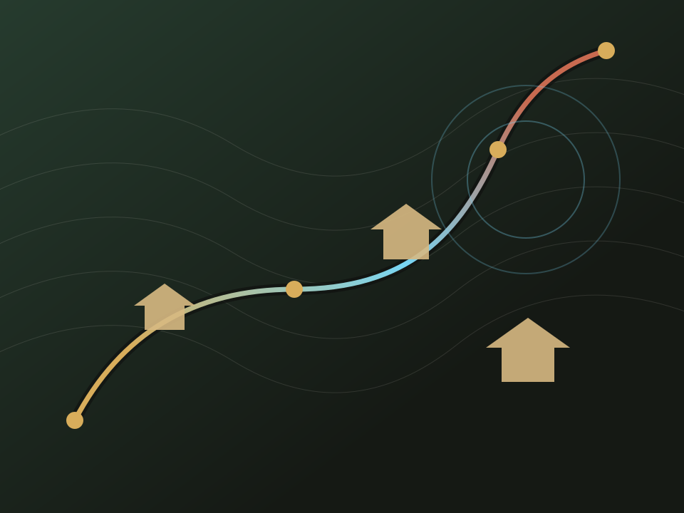
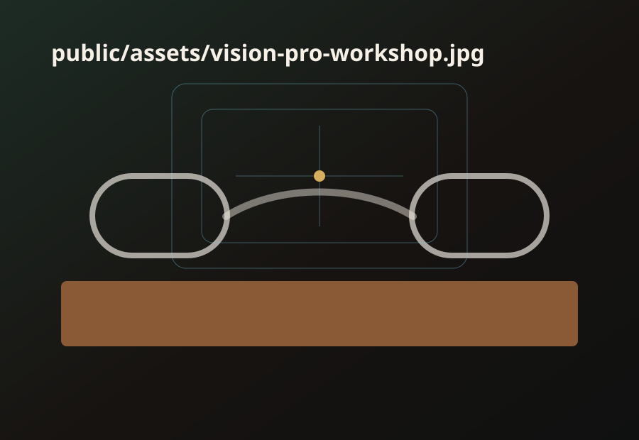
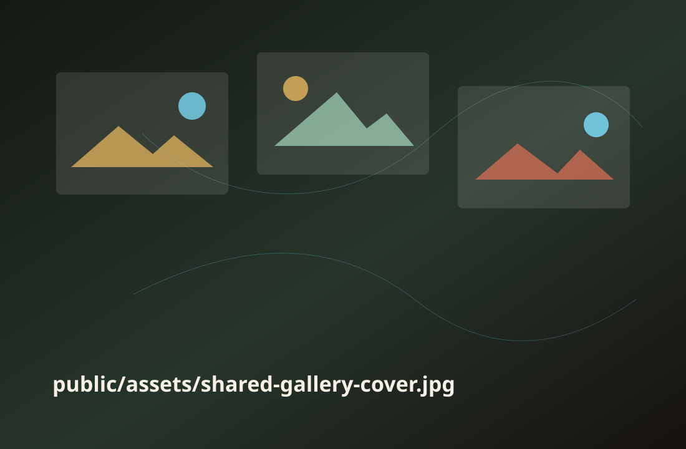

15min
Dive into Spatial
공간 사진과 비디오 촬영의 기본을 빠르게 맞춥니다. 피사체와의 거리, 움직임, 사람을 담는 방식, 깊이감을 짚고 바로 현장으로 나갑니다.
계획 배경
양동마을은 하회마을과 함께 UNESCO 세계유산 한국의 역사마을: 하회와 양동으로 등재된 역사마을입니다. 산세, 물길, 농경지, 정자, 고택이 이어지는 풍경은 공간을 보고 기록하는 커뮤니티 데이에 적합한 장면을 제공합니다.
국내 Vision Pro 생태계는 아직 함께 배우고, 실험하고, 결과물을 남기는 커뮤니티 경험이 충분하지 않습니다. 이 행사는 사용법을 넘어 각자가 본 장면을 공유 가능한 공간 콘텐츠로 남기는 것을 목표로 합니다.

하루의 흐름
참가자는 짧게 익히고, 현장에서 걸으며 촬영하고, 함께 감상한 뒤, 각자가 잘 쓰는 앱과 아이디어를 나눕니다.
15min
공간 사진과 비디오 촬영의 기본을 빠르게 맞춥니다. 피사체와의 거리, 움직임, 사람을 담는 방식, 깊이감을 짚고 바로 현장으로 나갑니다.
60min
오늘의 챌린지는 "가장 양동마을다운 순간". 골목의 깊이, 기와의 반복, 나무와 담장의 거리감을 각자의 시선으로 기록합니다.
45min
서로의 작품을 감상하며 어떤 공간 단서가 몰입감을 만들었는지 이야기합니다. 결과물은 공유 앨범 또는 간단한 앱의 형태로 남깁니다.
3min each
가장 잘 활용하는 앱 하나씩을 소개하고, 다음 커뮤니티 프로젝트로 확장할 아이디어를 모읍니다.
프로그램
각 활동은 다음 활동의 재료가 되도록 설계했습니다.
Spatial photo & video tips
촬영 전에 피사체와의 거리, 사람의 움직임, 앞뒤 레이어를 확인합니다. 짧은 체크인으로 참가자 간 기본 감각을 맞춥니다.

현장 챌린지
좋은 공간 콘텐츠는 멋진 피사체 하나보다 장면 사이의 관계를 잘 드러냅니다. 참가자는 아래 감각을 조합해 자신의 산책 미션을 정합니다.

결과물
첫 결과물은 공유 앨범으로 시작하고, 다음 회차에는 간단한 웹앱 또는 공간 콘텐츠 아카이브로 확장할 수 있습니다.
참가 신청
VisionOS에 관심이 있고 기본 사용법을 알고 있다면 참여할 수 있습니다. 촬영 경험보다 공간을 관찰하고 공유하려는 태도를 우선합니다.
운영 가이드
현재는 플레이스홀더로 구성했습니다. 아래 이름으로 파일을 추가하면 페이지 맥락을 유지한 채 실제 행사 톤으로 바꿀 수 있습니다.